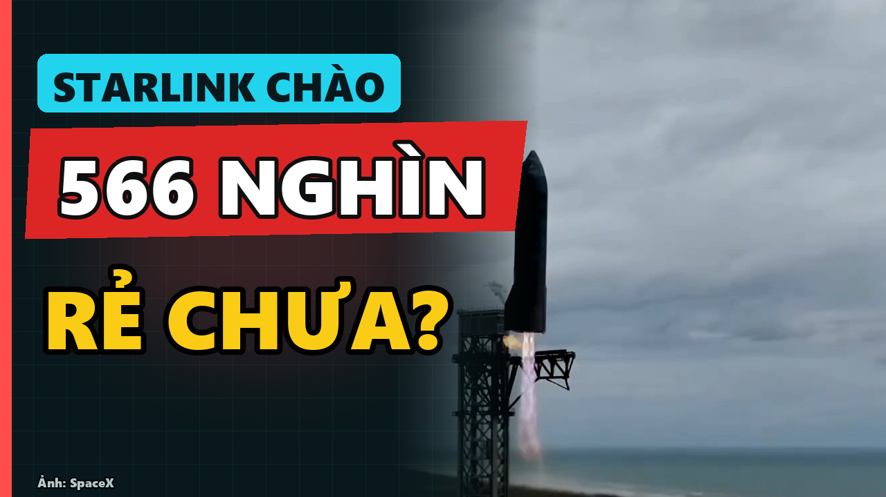
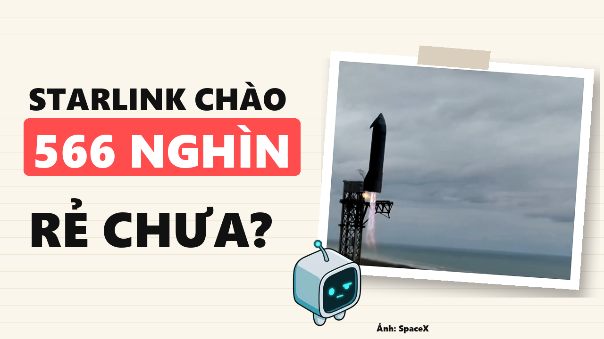

Duyệt 2 · 2026-11-16-starship-starlink-vn
6 cảnh báo
- Cảnh báo: độ khô: 7 cảnh lặp hình chính trong cửa sổ 8 cảnh
- Cảnh báo: độ khô: 1 cảnh đồ họa tĩnh dài > 4,5 s không có nhịp con hay camera
- Cảnh báo: độ khô: 1 beat có tiêu chí giám khảo dưới 3
- Cảnh báo: độ khô: điểm giám khảo trung bình 3.2 < 4.0
- Phương án 2: Cảnh báo: Thiếu góc Việt Nam hoặc túi tiền người xem (Việt Nam, người dùng, giá tăng, túi ai…)
- Phương án 2: Cảnh báo: tiêu đề có số «195 nghìn» nhưng 15 giây đầu chưa nói tới
Video
Tiêu đề + thumbnail
Phương án 1

Starlink Việt Nam từ 566 nghìn/tháng: đã rẻ hơn cáp quang chưa?
Phương án 2

Starlink 566 nghìn, cáp quang 195 nghìn: vệ tinh dành cho ai?
Phương án 3
Starship lần đầu được tháp bắt, Starlink Việt Nam 566 nghìn: rẻ chưa?
Shorts
Mô tả
Thứ Bảy vừa rồi, Starship của SpaceX lần đầu được tháp phóng ở Texas bắt gọn sau chuyến bay hơn 22 giờ, thả 26 vệ tinh Starlink thế hệ mới. Cùng tuần đó, trang Starlink tiếng Việt chào gói Internet vệ tinh từ 565.995 đồng/tháng (ở một số khu vực, đăng ký trước 1/12), trong khi gói cáp quang phổ thông của FPT là 195.000 đồng. Video đặt hai hóa đơn cạnh nhau, đọc Quyết định 659 về thí điểm Starlink (trần 600.000 thuê bao, kết thúc trước 2031) và xem Internet vệ tinh đang thực sự phục vụ ai: 196 điểm lõm sóng, tàu cá, điểm trường vùng cao. ⏱ Mốc chương 00:00 Starship về tháp, Starlink chào giá ở Việt Nam 00:32 Vì sao bắt được con tàu là chuyện lớn 01:53 Starlink được phép làm gì ở Việt Nam 02:55 Giá dự kiến và giá đang chào 04:12 Đặt cạnh hóa đơn cáp quang 05:19 Những nơi không kéo được dây 06:27 Hai việc cần ngóng 07:25 Trả lời câu hỏi 📎 Nguồn - SpaceX (13/11/2026; 14/11/2026; chuyến bay thứ 15; 26 vệ tinh Starlink V3; 22,5 giờ; bắt Starship lần đầu tiên; chuyển hướng ra ngoài khơi; đốt hạ cánh lơ lửng trên vịnh; kích hoạt hệ thống tự hủy; 32 trên 33 động cơ; ngắt sớm do thiếu nhiên liệu; hơn 20 giờ trong không gian; đốt lại một động cơ để rời quỹ đạo): https://www.spacex.com/launches/starship-flight-15 (truy cập 2026-11-15) - Starlink Việt Nam (565.995 đồng/tháng; 100 Mbps; đăng ký trước 1/12; 855.550 đồng/tháng; trên 400 Mbps; 100 Mbps; chậm hơn vào giờ cao điểm; hơn 160 quốc gia, vùng lãnh thổ): https://www.starlink.com/vn/residential (truy cập 2026-11-15) - Chính phủ – Quyết định 659/QĐ-TTg (600.000 thuê bao; 05 năm; trước 01/01/2031; năm 2031; Internet trên biển, trên máy bay; Quyết định 659; 26/3/2025; năm 2025): https://baochinhphu.vn/thi-diem-co-kiem-soat-trien-khai-dich-vu-vien-thong-su-dung-cong-nghe-ve-tinh-quy-dao-tam-thap-tai-viet-nam-102250326112020508.htm (truy cập 2026-11-15) - Bộ Khoa học và Công nghệ (2,5% tổng số thuê bao băng rộng cố định; 600.000 thuê bao; 4 trạm gateway; 85 USD; 2,2 triệu đồng mỗi tháng (dự kiến, tháng 3/2026); 435 USD tháng đầu; 350 USD thiết bị (dự kiến); giám sát nếu giảm giá cạnh tranh không lành mạnh; 4 trạm gateway: Phú Thọ, Đà Nẵng, TP Hồ Chí Minh): https://mst.gov.vn/internet-ve-tinh-starlink-it-co-kha-nang-canh-tranh-voi-nha-mang-viet-197260401163426002.htm (truy cập 2026-11-15) - Bộ Khoa học và Công nghệ (254 bộ thiết bị; 400 Mbps; 6 tháng; 13 tỉnh, thành phố; 254 địa điểm; 99,56% thôn bản có băng rộng di động; 273 thôn; 82 thôn chưa có điện lưới; rà soát năm 2026; 1.000 bộ thiết bị; 6 tháng): https://mst.gov.vn/starlink-dong-hanh-voi-bo-khcn-xoa-lom-song-thu-hep-khoang-cach-so-197260911165023286.htm (truy cập 2026-11-15) - Bộ Khoa học và Công nghệ (196 điểm lõm sóng; 154 thôn, bản; 42 cơ sở công lập; 1/11/2026; 297,64 Mbps tốc độ Internet cố định): https://mst.gov.vn/dau-an-noi-bat-cua-nghi-quyet-57-197261111140350497.htm (truy cập 2026-11-15) - FPT Telecom (195.000 đồng/tháng; 300 Mbps; 195.000 đồng/tháng; 1 Gbps): https://fpt.vn/internet (truy cập 2026-11-15) 🧮 Số kênh tự tính - 2,57 lần = 2,2 triệu đồng (mức dự kiến 3/2026) ÷ 855.550 đồng (gói đắt nhất đang chào) - 2,9 lần = 565.995 ÷ 195.000 đồng - 4,39 lần = 855.550 ÷ 195.000 đồng - 6.791.940 đồng = 565.995 × 12 tháng - 2.340.000 đồng = 195.000 × 12 tháng - 4.451.940 đồng chênh mỗi năm = 6.791.940 − 2.340.000, bằng khoảng 1,9 năm cước cáp quang 🖼 Ghi công ảnh và video - Video: SpaceX - Ảnh: Bộ Khoa học và Công nghệ - Video: Dima Krivoy trên Pexels - Video: Werner Pfennig trên Pexels - Video: Mikhail Nilov trên Pexels - Video: Steve B trên Pexels - Ảnh: SpaceX - Ảnh: U.S. Air Force / Trevor Cokley, Wikimedia Commons, Public domain #NhipCongNghe #Starlink #StarlinkVietNam
Tags
Starlink, Starlink Việt Nam, giá Starlink, Internet vệ tinh, Starship, SpaceX, cáp quang, FPT, Quyết định 659, thí điểm Starlink, lõm sóng, Internet vệ tinh giá bao nhiêu, Starlink có rẻ không, Nhịp Công Nghệ, tin công nghệ